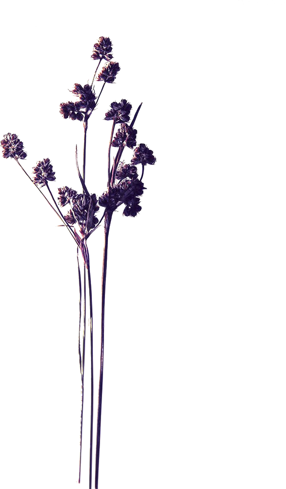
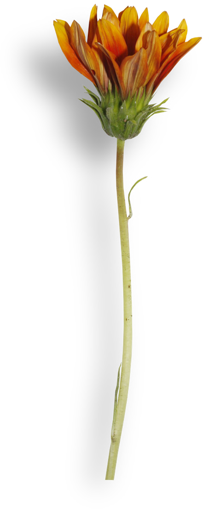

Flores que não murcham, feitas à mão por quem ama o que faz. Conheça a marca por trás dos arranjos.

A Cris que faz nasceu do encanto pelas flores e do desejo de eternizar a sua beleza. Cada arranjo é montado à mão, peça por peça, transformando flores desidratadas em composições que atravessam o tempo.
Acreditamos que presentear é um gesto de carinho que merece durar. Por isso, criamos arranjos que continuam lindos muito depois do dia em que foram dados — lembranças vivas de momentos especiais.
Conhecer os arranjosNosso símbolo é uma flor. Cada uma de suas partes representa um valor que guia o nosso trabalho, do primeiro broto ao arranjo final.
Preparo
Cuidado
Delicadeza
Beleza
Elegância

A desidratação preserva a forma, a textura e a cor das flores, criando peças únicas e duradouras. É a beleza da natureza, sem pressa para acabar.
É essa a promessa que colocamos em cada flor. Venha presentear com a Cris que faz.
Ver catálogo